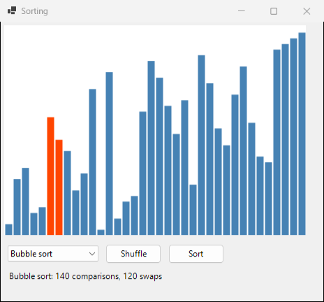

Tutorial 60: Watching sorting algorithms
Sorting is the classic example of an algorithm. This lesson records the work of three algorithms — bubble, selection and insertion — and replays it on a canvas, one step per timer tick, while counting comparisons and swaps.
What you will learn#
- how bubble sort, selection sort and insertion sort work,
- recording work as a list of steps and replaying it with a timer,
- drawing bars on a canvas and highlighting the two that are touched,
- counting comparisons and swaps to compare algorithms,
- a generator of random numbers with a fixed start.
The program#
# Tutorial 61: watching sorting algorithms - an animation, a timer and counting the work
load "dotnet.ring"
using {
"System.Drawing"
"System.Windows.Forms"
}
C_COUNT = 36
C_BAR = 12
C_HEIGHT = 300
oForm = ""
oPicture = ""
oCanvas = ""
oAlgorithm = ""
oInfo = ""
oTimer = ""
aValues = [] # the bars as they are shown now
aSteps = [] # the work of the algorithm: ["compare", i, j] or ["swap", i, j]
nStep = 0
nCompares = 0
nSwaps = 0
nSeed = 12345
aHot = [] # the two bars that are touched by the step being shown
func main
oForm = uiForm("Sorting",C_COUNT * C_BAR + 30,C_HEIGHT + 100)
oPicture = uiPictureBox(oForm,5,5,C_COUNT * C_BAR,C_HEIGHT)
oCanvas = new UiCanvas(oPicture)
oAlgorithm = uiComboBox(oForm,10,C_HEIGHT + 20,130,["Bubble sort","Selection sort","Insertion sort"])
uiButton(oForm,"Shuffle",150,C_HEIGHT + 18,80,28,"shuffle()")
uiButton(oForm,"Sort",240,C_HEIGHT + 18,80,28,"startSorting()")
oInfo = uiLabel(oForm,"",10,C_HEIGHT + 55,400,22)
oTimer = uiTimer(15,"showStep()")
shuffle()
uiTest(oForm,"selfTest()")
uiRun(oForm)
uiEnd()
# a small random number generator with a fixed start, so that every run shows the same bars
func nextRandom nLimit
nSeed = (nSeed * 1103515245 + 12345) % 2147483648
return (floor(nSeed / 65536) % nLimit) + 1
func shuffle
oTimer.Stop()
aValues = []
for nI = 1 to C_COUNT
aValues + nI
next
for nI = C_COUNT to 2 step -1
nJ = nextRandom(nI)
aTemp = aValues[nI]
aValues[nI] = aValues[nJ]
aValues[nJ] = aTemp
next
aSteps = []
nStep = 0
nCompares = 0
nSwaps = 0
aHot = []
oInfo.Text = "Press Sort"
draw()
# the algorithms only RECORD what they do on a copy; the timer replays it step by step
func startSorting
oTimer.Stop()
aWork = aValues
aSteps = []
nStep = 0
nCompares = 0
nSwaps = 0
switch oAlgorithm.SelectedIndex
on 0
bubbleSort(aWork)
on 1
selectionSort(aWork)
on 2
insertionSort(aWork)
off
oTimer.Start()
func bubbleSort aWork
for nEnd = len(aWork) to 2 step -1
for nI = 1 to nEnd - 1
aSteps + ["compare",nI,nI + 1]
if aWork[nI] > aWork[nI + 1]
aTemp = aWork[nI]
aWork[nI] = aWork[nI + 1]
aWork[nI + 1] = aTemp
aSteps + ["swap",nI,nI + 1]
ok
next
next
func selectionSort aWork
for nI = 1 to len(aWork) - 1
nMin = nI
for nJ = nI + 1 to len(aWork)
aSteps + ["compare",nMin,nJ]
if aWork[nJ] < aWork[nMin]
nMin = nJ
ok
next
if nMin != nI
aTemp = aWork[nI]
aWork[nI] = aWork[nMin]
aWork[nMin] = aTemp
aSteps + ["swap",nI,nMin]
ok
next
func insertionSort aWork
for nI = 2 to len(aWork)
nJ = nI
while nJ > 1
aSteps + ["compare",nJ - 1,nJ]
if aWork[nJ - 1] > aWork[nJ]
aTemp = aWork[nJ]
aWork[nJ] = aWork[nJ - 1]
aWork[nJ - 1] = aTemp
aSteps + ["swap",nJ - 1,nJ]
nJ--
else
exit
ok
end
next
# show the next recorded step (the timer calls this)
func showStep
if nStep >= len(aSteps)
oTimer.Stop()
aHot = []
oInfo.Text = "Sorted: " + nCompares + " comparisons, " + nSwaps + " swaps"
draw()
return
ok
nStep++
aStep = aSteps[nStep]
aHot = [aStep[2],aStep[3]]
if aStep[1] = "compare"
nCompares++
else
nSwaps++
aTemp = aValues[aStep[2]]
aValues[aStep[2]] = aValues[aStep[3]]
aValues[aStep[3]] = aTemp
ok
oInfo.Text = oAlgorithm.Text + ": " + nCompares + " comparisons, " + nSwaps + " swaps"
draw()
func draw
oCanvas.clear("White")
for nI = 1 to len(aValues)
nHeight = aValues[nI] * (C_HEIGHT - 10) / C_COUNT
cColor = "SteelBlue"
if find(aHot,nI) > 0
cColor = "OrangeRed"
ok
oCanvas.fillRect((nI - 1) * C_BAR + 1,C_HEIGHT - nHeight,C_BAR - 2,nHeight,cColor)
next
oCanvas.show()
func isSorted
for nI = 1 to len(aValues) - 1
if aValues[nI] > aValues[nI + 1]
return False
ok
next
return True
func selfTest
oTimer.Stop()
dnAssert("the bars start shuffled",isSorted(),False)
for nAlgorithm = 0 to 2
shuffle()
oAlgorithm.SelectedIndex = nAlgorithm
startSorting()
oTimer.Stop()
while nStep < len(aSteps)
showStep()
end
showStep()
dnAssert("algorithm " + nAlgorithm + " sorts",isSorted(),True)
dnAssert("algorithm " + nAlgorithm + " compared",nCompares > 0,True)
next
# the same start gives the same work: selection sort makes at most n-1 swaps
shuffle()
oAlgorithm.SelectedIndex = 1
startSorting()
oTimer.Stop()
nSwapsPlanned = 0
for aStep in aSteps
if aStep[1] = "swap"
nSwapsPlanned++
ok
next
dnAssert("selection sort swaps at most n-1 times",nSwapsPlanned <= C_COUNT - 1,True)
SELFTEST OK (8 checks)How it works#
Record, then replay#
A sorting algorithm is a loop that finishes in a moment: you could not see it. So the three functions bubbleSort, selectionSort and insertionSort work on a copy of the bars and, instead of drawing, record each step in aSteps: ["compare", 3, 4] or ["swap", 3, 4]. The timer then calls showStep every 15 milliseconds; each call takes the next recorded step, applies a swap to the bars on screen, adds to the counters and redraws. This separation — computing in one place and showing in another — also makes the self test easy: it runs all the steps without waiting and checks the result.
The three algorithms#
| Algorithm | Idea | Work |
|---|---|---|
| Bubble sort | compare neighbours and swap them if they are in the wrong order; repeat, and the biggest bar "bubbles" to the end | many comparisons and many swaps |
| Selection sort | find the smallest of the rest and swap it to the front | many comparisons, at most n − 1 swaps |
| Insertion sort | take the next bar and slide it left until it is in the right place (like sorting playing cards in your hand) | fast when the data is already nearly sorted |
Press Sort with each algorithm on the same bars (Shuffle makes a new order) and watch the counters at the bottom. For 36 bars bubble sort needs 630 comparisons, selection sort also 630 but far fewer swaps. Fast algorithms such as quicksort and merge sort need only about n × log n comparisons; for 1,000,000 items that is about 20 million instead of hundreds of billions. The .NET List.Sort uses such an algorithm.
Drawing#
draw clears the canvas and draws one rectangle per bar; the height is the value, scaled to the window. A bar in aHot (the pair of the current step) is red. oCanvas.show() puts the finished picture on the screen — drawing everything first and showing it once avoids flicker (tutorial 14).
Same bars every time#
nextRandom is a tiny random generator with a fixed start (nSeed), so that the screenshot and the test are always the same. Use Random with no fixed seed when you want different bars each time.
The pattern "record a list of events, then play it back" is useful in many places: a replay of a game, an undo history (tutorial 58), or a slow motion view of any algorithm.
What you learned#
- how three sorting algorithms work and how they differ,
- recording steps and replaying them with a timer,
- the canvas for bars and highlights,
- measuring work with counters.
Exercises#
- Add a Shell sort or quicksort and compare the counters.
- Show a bar's value as text over the bar (
oCanvas.text). - Add a speed track bar that changes the timer interval.
- Count how many comparisons insertion sort needs for bars that are already sorted.